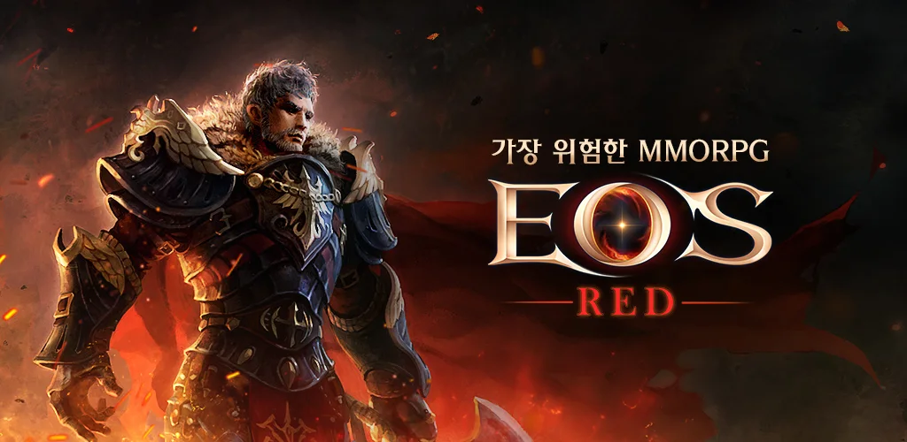

블루포션게임즈 · 블로믹스 · 2019.08.28 ~
에오스 레드 원격 임대
에오스 레드(EOS RED)는 블루포션게임즈가 개발해 2019년 8월 28일 출시한 모바일 MMORPG로, 지금은 블로믹스와 블루포션게임즈가 공동 서비스합니다. PC 온라인 게임 '에오스'의 세계관을 이어받아 50년 뒤의 이야기를 그리고, 대부분의 필드에서 PK가 가능해 길드 단위의 대규모 전투가 이어지는 게임입니다.
공식 PC 클라이언트는 없어서 PC에서는 앱플레이어로 실행합니다. 원격PC에 앱플레이어를 켜 두면 휴대폰 배터리·발열 걱정 없이 접속을 유지하고, 사냥 일정 같은 편의 기능을 쓰면서 외출 중에는 휴대폰으로 상태만 확인할 수 있습니다.
앱플레이어 실행사냥 일정 기능신규 서버 헤이드
에오스 레드를 원격PC로 돌리면 좋은 점
- PC 클라이언트 없이 앱플레이어로 — 에오스 레드는 모바일 게임이라 공식 PC 버전이 없습니다. 원격PC에 LD플레이어·BlueStacks 같은 앱플레이어를 설치해 실행하고, 내 기기는 화면만 받으면 됩니다.
- 사냥 일정 기능과 함께 쓰기 편해요 — 2021년 6월 업데이트로 들어온 '사냥 일정'은 최대 5개의 던전을 미리 정해 두면 자리를 비워도 캐릭터가 지정한 던전을 돌며 사냥하는 편의 기능입니다. 시간 던전처럼 모든 이용자가 들어갈 수 있는 던전만 지정할 수 있어요. 원격PC로 접속을 유지하면 이 기능을 쓰기가 한결 수월합니다.
- 공성전 서버 '헤이드' — 2026년 9월 26일 7주년 업데이트와 함께 공성 세율이 기존의 2배인 공성전 특화 서버 '헤이드'가 열렸고, 첫 공성전은 10월 25일에 진행됐습니다. 공성·길드전은 정해진 시간에 접속해야 해서 24시간 켜진 원격PC가 시간 맞추기에 편합니다.
- 신규 클래스·펫·심화 특성 — 7주년 업데이트에서 신규 클래스 '헌터'와 신규 펫 8종이 추가됐고, 특성 레벨 100을 달성하면 심화 특성으로 더 강해지는 성장 구조도 열렸습니다. 성장 요소가 늘수록 접속해 두는 시간이 중요해집니다.
- PK 필드는 접속 관리가 중요해요 — 대부분의 필드에서 PK가 가능하고 아이템 드랍이 발생하는 방식이라, 장시간 접속을 유지할 때는 사냥 위치와 안전 설정을 미리 점검하는 게 좋습니다. 원격 앱으로 들어가 상태를 바로 확인하고 조작할 수 있습니다.
- 휴대폰은 확인용으로 — 하루 종일 휴대폰을 켜 두지 않아도 됩니다. 출근·외출 중에는 원격 앱으로 접속해 물약·가방·사망 여부만 확인하세요.
에오스 레드 추천 임대 옵션
라이젠 4350G
4코어 8쓰레드 · RAM 24GB · 내장 Vega 6
앱플레이어 다중4코어 8쓰레드 · RAM 24GB · 내장 Vega 6
라이젠 5700G
8코어 16쓰레드 · RAM 32GB · 내장 Vega 8
BEST · 다중8코어 16쓰레드 · RAM 32GB · 내장 Vega 8
에오스 레드는 출시 당시 저사양 기기에서도 구동되도록 만들었다고 소개된 모바일 게임이라, 앱플레이어로 1~2계정을 돌린다면 가장 경제적인 4350G로 충분합니다. 앱플레이어 창을 여러 개 켜려면 8코어·RAM 32GB 5700G가 가장 여유롭습니다. 계정 수와 그래픽 설정을 알려주시면 대수와 옵션을 맞춰 드려요.
에오스 레드 실행 환경
| PC 공식 버전 | 없음 (모바일 게임 · 앱플레이어로 PC 실행) |
|---|---|
| 등록 스토어 | Google Play · App Store (iOS 15.0 이상) |
| PC 실행 방식 | LD플레이어 · BlueStacks · 녹스 · 미뮤 등 안드로이드 앱플레이어 |
| 앱플레이어 요구 사양 예 | BlueStacks 안내 기준 Windows 7 이상 · RAM 4GB 이상 · 여유 공간 10GB 이상 |
| 원격임대 PC | 전 옵션 RAM 24GB 이상(5700G는 32GB) · SSD 250GB — 위 요구 사양을 넘음 |
스토어·앱플레이어 제작사 안내 기준이며, 게임 자체의 공식 PC 사양은 없습니다
에오스 레드 원격 임대 자주 묻는 질문
에오스 레드는 어떤 게임인가요?
블루포션게임즈가 개발해 2019년 8월 28일 출시한 모바일 MMORPG입니다. PC 온라인 게임 '에오스'의 50년 뒤 이야기를 다루며, 5개 대륙 45개 지역에 걸친 시나리오와 퀘스트가 있고 대부분의 필드에서 PK가 가능해 길드 단위 대규모 전투가 이어집니다. 지금은 블로믹스와 블루포션게임즈가 공동 서비스합니다.
에오스 레드 PC 버전이 있나요?
공식 PC 클라이언트는 없습니다. 안드로이드 앱플레이어(LD플레이어, BlueStacks, 녹스, 미뮤 등)로 PC에서 실행하는 방식이며, 원격PC에서도 같은 방식으로 이용합니다. 앱플레이어 설치와 로그인은 고객님이 직접 하시고, 궁금한 점은 카카오톡으로 문의해 주세요.
사냥 일정은 무엇이고 원격PC에서 쓸 수 있나요?
2021년 6월 업데이트로 들어온 편의 기능입니다. 최대 5개의 던전을 미리 정해 두면 자리를 비워도 캐릭터가 지정한 던전을 돌며 사냥하고, 체력 회복제가 떨어지면 자동으로 구매하는 기능도 함께 안내됐습니다. 모든 이용자가 입장할 수 있는 시간 던전만 지정할 수 있고, 세부 조건은 업데이트에 따라 바뀔 수 있으니 게임 내 안내를 확인해 주세요.
원격 접속을 끊어도 게임이 계속 켜져 있나요?
네. 원격 접속 창만 닫히고 원격PC와 앱플레이어는 계속 실행됩니다. 사냥 일정 같은 게임 내 기능은 게임이 안내하는 범위 안에서 이어지며, 모든 상황에서 제한 없이 자동 사냥이 된다는 뜻은 아닙니다.
신규 서버 '헤이드'는 무엇인가요?
공성전 중심의 경쟁 콘텐츠를 좋아하는 이용자를 위한 신규 서버입니다. 공성 세율이 기존 서버의 2배로 적용되고, 2026년 9월 26일 7주년 업데이트와 함께 열려 첫 공성전이 10월 25일에 진행됐습니다. 서버와 관계없이 원격PC에서 같은 방식으로 접속할 수 있습니다.
여러 계정을 원격PC 한 대에서 돌릴 수 있나요?
앱플레이어는 창을 여러 개 띄울 수 있어 기술적으로는 가능하지만, 에오스 레드의 다중 접속 허용 여부는 공식 공지로 확인되지 않았습니다. 이용 약관과 공지 범위 안에서만 이용해 주세요. 계정 수에 따라 맞는 옵션이 달라지니 카카오톡으로 알려주시면 안내해 드립니다.
어떤 옵션이 좋은가요?
출시 당시 저사양 기기에서도 구동되도록 만들었다고 소개된 게임이라 1~2계정은 가장 경제적인 라이젠 4350G로 충분합니다. 앱플레이어 창을 여러 개 켜려면 RAM 32GB인 라이젠 5700G가 여유롭습니다. 옵션별 요금은 메인 페이지의 임대 옵션에서 확인하실 수 있습니다.
외부 자동화 프로그램도 쓸 수 있나요?
지원하지 않습니다. 게임사 운영 정책에 어긋나는 프로그램은 계정 제재 대상이 될 수 있으니, 원격PC는 게임의 공식 기능 범위 안에서 이용해 주세요.